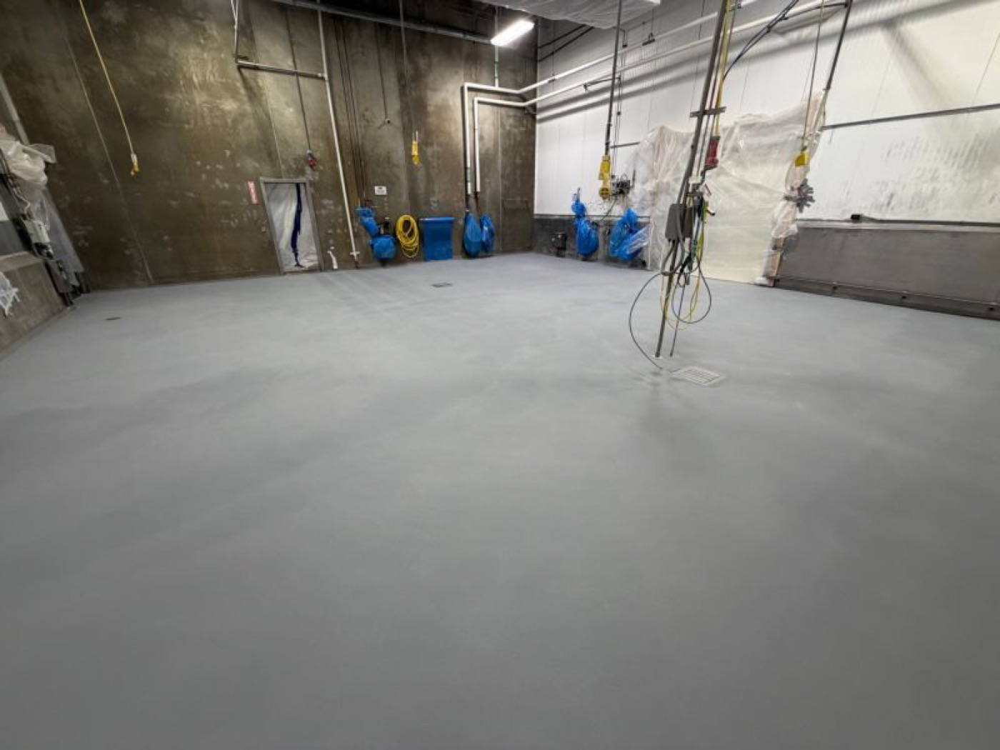
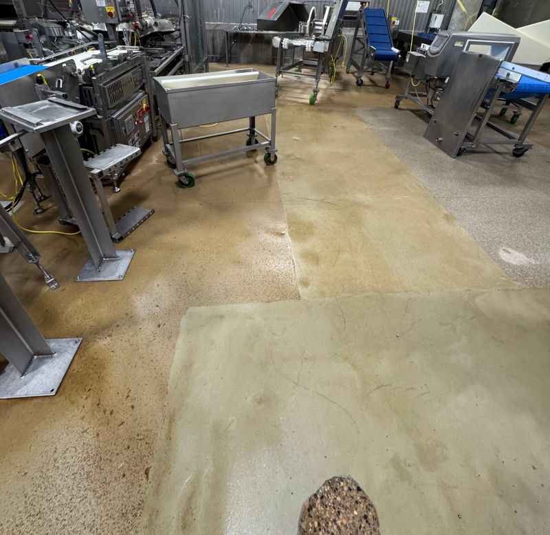
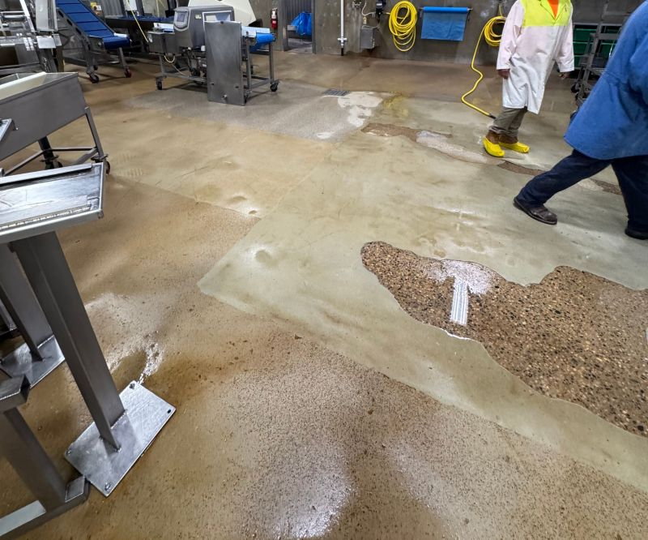
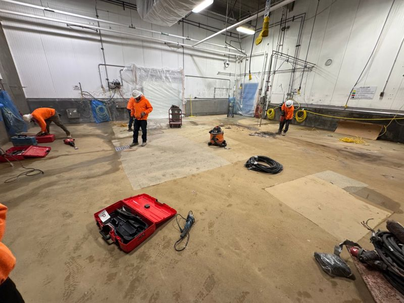
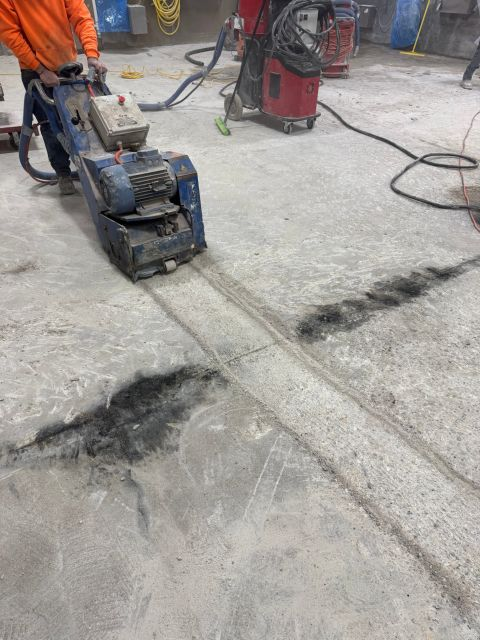
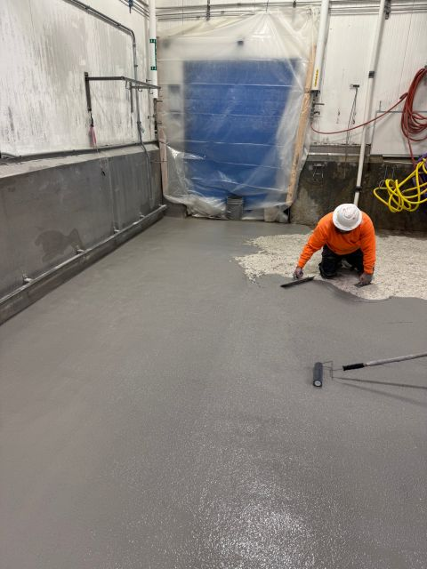
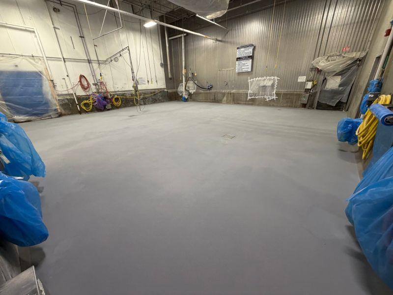

New equipment was arriving Monday, and the plant made the right call before it showed up. The room already had a floor problem. Its old coating was peeling in sheets, wash water collected in low spots, and open edges gave soil and bacteria places to hide.

Waiting until after the equipment move would have turned one clean flooring job into a future shutdown. The crew would have needed to work around fixed machinery, and the plant would have had to take the room out of production again. Doing the floor first kept both scopes simple.
The Existing Floor Was Already Failing
The condition was visible around the old equipment. The coating was worn, patched, discolored, and separating from the floor. In another area, a large section had opened up and water was sitting across the damaged surface. That is more than a cosmetic issue in a food plant. Loose edges and low spots make routine cleaning harder and leave places that are difficult to inspect and sanitize.


Once the old equipment was out, the crew had full access to the room. That meant no guessing around legs, bases, utility drops, or tight gaps. The failed material could be removed to sound concrete, drains could be detailed correctly, and the new system could run continuously through the open space.
One Weekend for Removal, Prep, and STX
SaniCrete took the room for the weekend. The crew removed the failed coating, mechanically prepared the concrete, detailed the drains, and installed SaniCrete STX with integral cove base. Each step mattered because the finished floor is only as reliable as the substrate and details underneath it.



This is the window plants often miss when equipment projects are planned. The floor is easiest to reach after the old line comes out and before the new line goes in. Using that gap avoids a second move, a second shutdown, and a floor full of compromises around installed equipment.
Monday Started on Schedule
By Monday morning, the room was open and ready for the equipment move. The new gray floor was seamless, the drains were tied into the system, the cove base closed the wall transition, and the plant did not have to schedule another shutdown to fix a problem it already knew about.

If new equipment is on your schedule, put the floor on it too. The best time to correct a failing floor is while the room is already open.